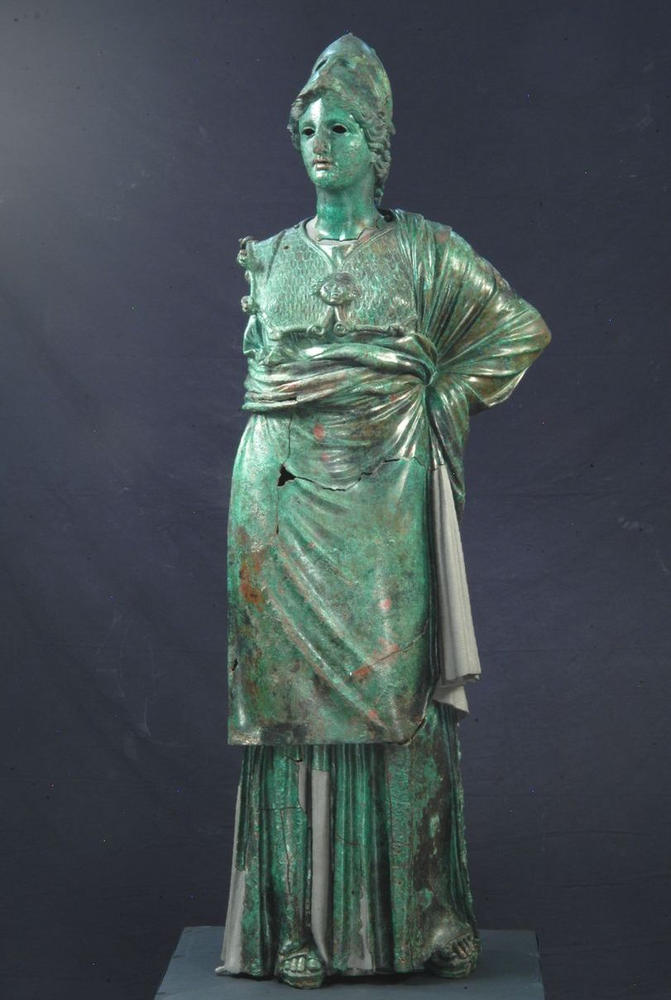

La statua rappresenta Atena/Minerva, dea della sapienza e della guerra. È in piedi, in posa pacata: indossa l'elmo corinzio rialzato sulla fronte, l'egida sul petto con il gorgoneion (la testa di Medusa) al centro, un lungo chitone a pieghe verticali e l'himation (mantello) annodato sul fianco. Ai piedi calza sandali alti.
Realizzata nei primi decenni del III secolo a.C., è una replica o rielaborazione di un originale greco di ambito ellenistico. Vi convivono due anime: il panneggio bagnato di gusto classico greco (V-IV sec.) e una resa più rigida e decorativa delle pieghe, tipica della bronzistica etrusco-italica. Tecnica della fusione a cera persa, con dettagli in rame per labbra e ciglia, e occhi originariamente in pasta vitrea.
Rinvenuta ad Arezzo nel 1541, presso la chiesa di San Lorenzo, dentro i resti di una domus romana del I secolo d.C. dove fungeva da arredo di lusso. Subito acquisita da Cosimo I de' Medici, che la collocò nello Studiolo di Calliope a Palazzo Vecchio. Successivamente passa alla Galleria degli Uffizi e infine al Museo Archeologico Nazionale di Firenze, dove è oggi conservata.
Quando fu trovata, alla statua mancava il braccio destro. Nel '700 lo scultore Francesco Carradori ne inventò uno, teso in avanti con la mano aperta. Mancavano però confronti antichi: era una sua interpretazione personale. Il restauro del 2000-2008 ha rimosso il braccio settecentesco riportando la statua all'aspetto autentico. Le parti mancanti del panneggio sono state integrate in alluminio applicato con calamite — un restauro reversibile: se domani si trovasse un frammento originale, potrebbe essere rimesso al suo posto.